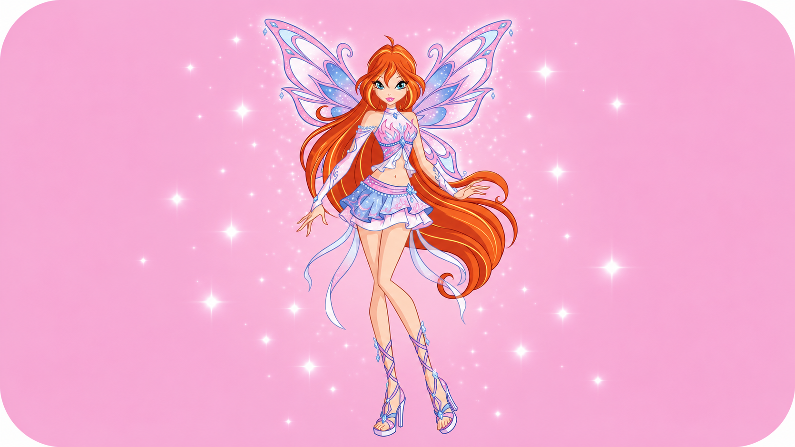
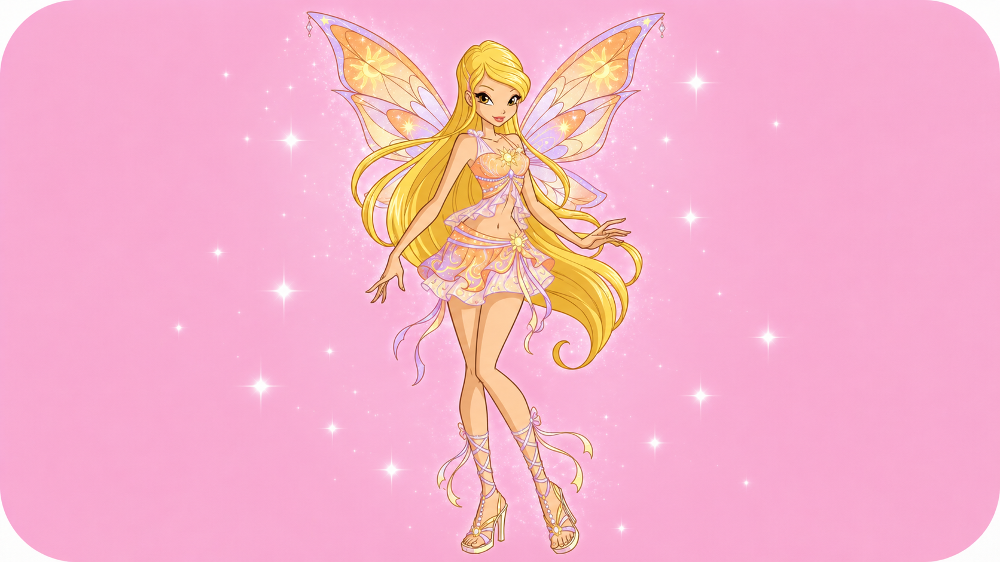
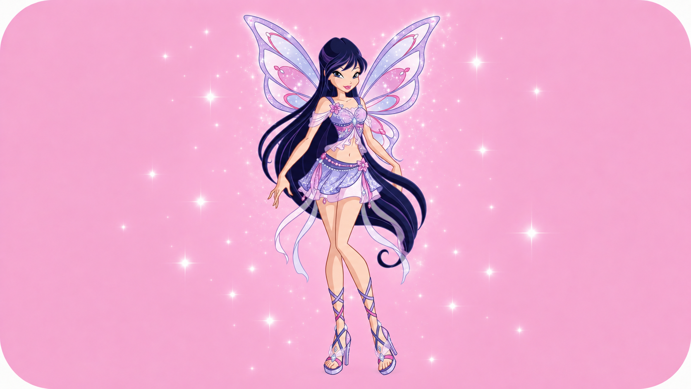
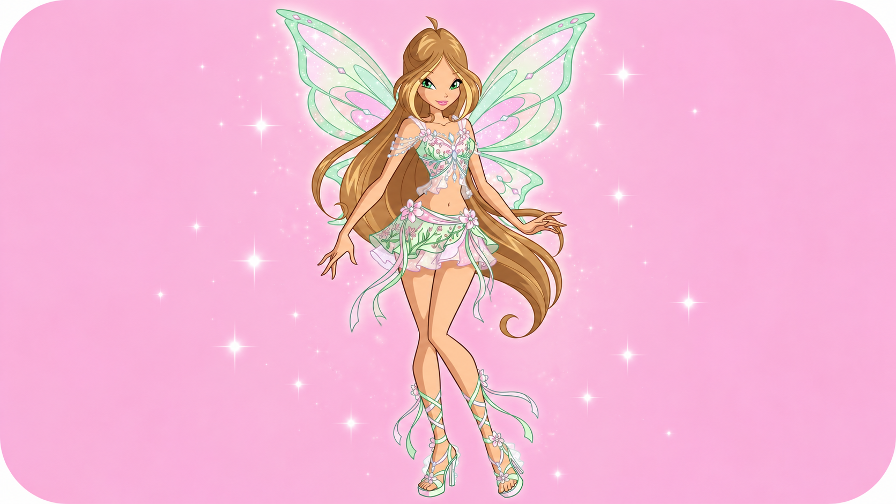
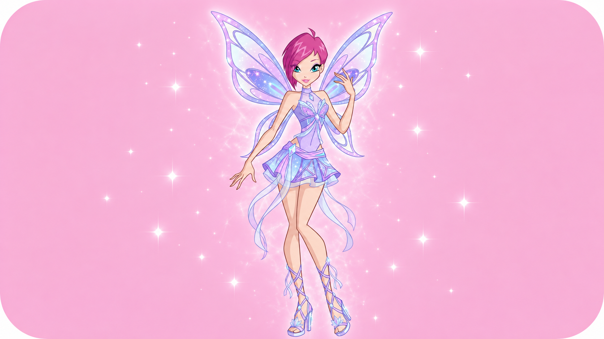
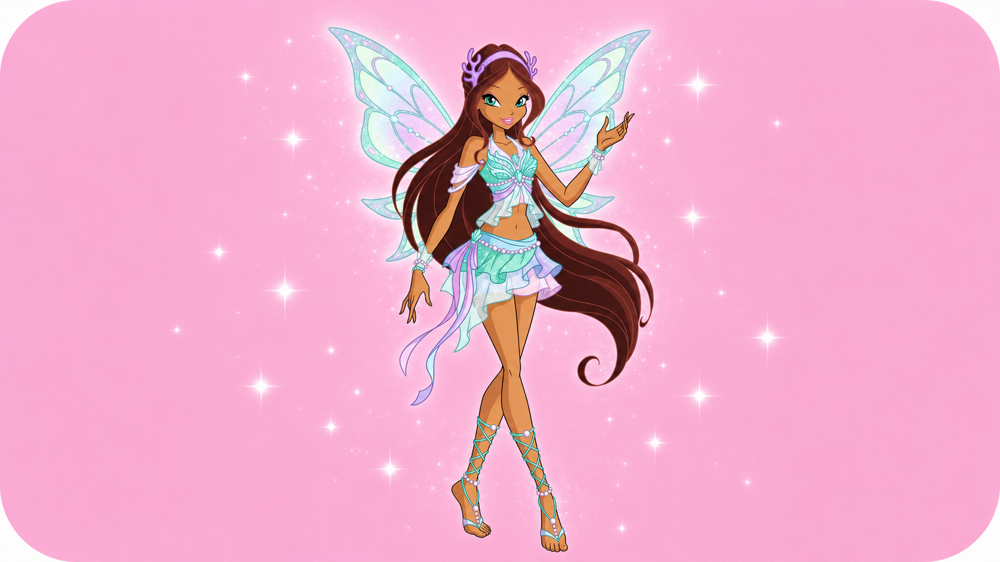

As fadas do universo das winx
Das telas para o mundo mágico, o Clube das Winx construiu uma história cheia de amizade e momentos marcantes.
Winx em destaque

Bloom: líder do grupo
É a princesa de Domino e possui a magia mais poderosa do universo.

Stella: A fada do Sol e da Lua
É a princesa de Solaria, ama moda e traz alegria e estilo para o grupo.

Musa: A fada da Música
Vinda de Melody, expressa seus sentimentos através de instrumentos e ondas sonoras.

Flora: A fada da Natureza
Vinda de Lynphea, é doce, calma e usa o poder das plantas e flores para proteção.

Tecna: A fada da Tecnologia
Vinda de Zenith, resolve problemas com pura lógica, inteligência e hologramas.

Aisha: A fada das Ondas
É a princesa de Andros, uma atleta determinada que controla o fluido mágico Morphix.